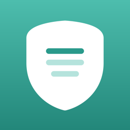

SafeLook
Safe Offline Lesson Viewer
SafeLook is an iPad and iPhone app that shows HTML pages, PDFs, images, video, audio and text files that a teacher or parent has prepared — without ever going online.
- If a page tries to load images or scripts from the web, the request is blocked.
- Tapping a link never opens another website or Safari, including links inside PDFs and videos.
- Add materials from the Files app, the Share menu, drag and drop, or AirDrop — ZIP files and folders work too.
- No account and no ads. Your files stay on your device.
© 2026 SafeLook